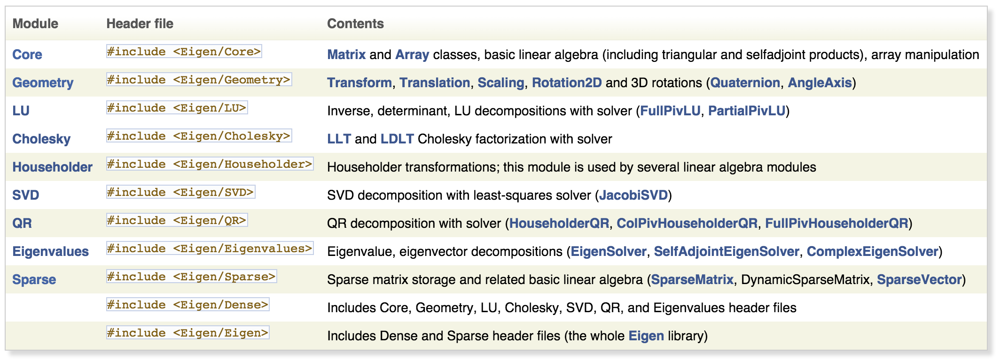
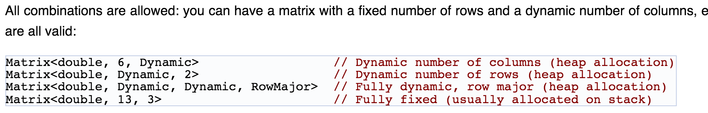

Close
Close

Using Eigen
Introduction
- Eigen is:
- C++ template library,
- Linear algebra, matrices, vectors, numerical solvers, etc.
- 
Tutorials
Obviously, you can read:
- the existing manual pages
- tutorials (short, long).
- the Quick Reference
Getting started
- Header only, just need
#include - Uses CMake, but that's just for
- documentation
- run unit tests
- do installation.
C++ Principles
(i.e. why introduce Eigen on this course)
- Eigen uses
- Templates
- Loop unrolling, traits, template meta programming
Matrix Class
- This:
#include <iostream>
#include <Eigen/Dense>
using Eigen::MatrixXd;
int main()
{
MatrixXd m(2,2);
m(0,0) = 3;
m(1,0) = 2.5;
m(0,1) = -1;
m(1,1) = m(1,0) + m(0,1);
std::cout << m << std::endl;
}
- Produces:
3 -1
2.5 1.5
Matrix Class Declaration
Matrix Class
cpp
template<typename _Scalar, int _Rows, int _Cols, int _Options, int _MaxRows, int _MaxCols>
class Matrix
: public PlainObjectBase<Matrix<_Scalar, _Rows, _Cols, _Options, _MaxRows, _MaxCols> >
{
So, its templates, so review last weeks lecture.
Matrix Class Construction
But in documentation:

It took a while but I searched and found:
src/Core/util/Constants.h:const int Dynamic = -1;
and both fixed and dynamic Matrices come from same template class???
How do they do that?
DenseStorage.h - 1
In src/Core/DenseStorage.h:
template <typename T, int Size, int MatrixOrArrayOptions,
int Alignment = (MatrixOrArrayOptions&DontAlign) ? 0
: (((Size*sizeof(T))%16)==0) ? 16
: 0 >
struct plain_array
{
T array[Size];
So, a plain_array structure containing a stack allocated array.
DenseStorage.h - 2
In src/Core/DenseStorage.h:
// purely fixed-size matrix
template<typename T, int Size, int _Rows, int _Cols, int _Options> class DenseStorage
{
internal::plain_array<T,Size,_Options> m_data;
There is a default template class for DenseStorage, and specialisation for fixed arrays.
DenseStorage.h - 3
In src/Core/DenseStorage.h:
// purely dynamic matrix.
template<typename T, int _Options> class DenseStorage<T, Dynamic, Dynamic, Dynamic, _Options>
{
T *m_data;
DenseIndex m_rows;
DenseIndex m_cols;
There is a default template class for DenseStorage, and specialisation for Dynamic arrays.
Eigen Matrix Summary
- Templated type supports dynamic and fixed arrays seamlessly on stack or heap
- typedef's to make life easier:
Matrix3d= 3 by 3 of double - Uses TMP to generate generate code at compile time
- Benefit from optimisations such as loop unrolling when using fixed size constant arrays
Eigen Usage - CMake Include
- Need to set include path
- You could download and 'install' eigen into your project, and commit it. e.g.
include_directories(${CMAKE_SOURCE_DIR}/session03/cpp/Eigen/eigen-3.2.3/include/eigen3)
Eigen Usage - CMake Module
- CMake (3.1) does not have a
Find Modulefor eigen, but eigen provides one. - So, in your source tree
mkdir CMake
cp <path_to_eigen>/cmake/FindEigen3.cmake ./CMake
- Then in your CMakeLists.txt
set(CMAKE_MODULE_PATH "${CMAKE_SOURCE_DIR}/CMake;${CMAKE_MODULE_PATH}")
find_package(Eigen3)
include_directories(${EIGEN3_INCLUDE_DIR})
Eigen Usage - CMake External
- NiftySeg uses
option(USE_SYSTEM_EIGEN "Use an already installed version of the Eigen library" OFF)
if(USE_SYSTEM_EIGEN)
find_package(EIGEN REQUIRED)
else()
set(${PROJECT_NAME}_VERSION_EIGEN "ffa86ffb5570" CACHE STRING "Version of EIGEN" FORCE)
set(${PROJECT_NAME}_MD5_SUM_EIGEN 9559c34af203dde5f3f1d976d859c5b3 CACHE STRING "MD5 check sum for EIGEN" FORCE)
set(${PROJECT_NAME}_LOCATION_EIGEN
"http://cmic.cs.ucl.ac.uk/platform/dependencies/eigen-eigen-${${PROJECT_NAME}_VERSION_EIGEN}.tar.gz"
CACHE STRING "Location of Eigen" FORCE)
ExternalProject_Add(Eigen
URL ${${PROJECT_NAME}_LOCATION_EIGEN}
URL_MD5 ${${PROJECT_NAME}_MD5_SUM_EIGEN}
PREFIX ${PROJECT_BINARY_DIR}/Eigen
DOWNLOAD_DIR ${PROJECT_BINARY_DIR}/Eigen/download
SOURCE_DIR ${PROJECT_BINARY_DIR}/Eigen/source
STAMP_DIR ${PROJECT_BINARY_DIR}/Eigen/stamps
TMP_DIR ${PROJECT_BINARY_DIR}/Eigen/tmp
BINARY_DIR ${PROJECT_BINARY_DIR}/Eigen/build
CMAKE_ARGS
${CMAKE_PROPAGATED_VARIABLES}
-DCMAKE_INSTALL_PREFIX:PATH=${PROJECT_BINARY_DIR}/Eigen/install
-DBUILD_TESTING=1
)
set(Eigen_INCLUDE_DIR ${PROJECT_BINARY_DIR}/Eigen/install/include/eigen3)
endif()
include_directories(${Eigen_INCLUDE_DIR})
Eigen Example - in PCL
Point Cloud Library uses Eigen. Lets look at point based registration of two, same length, point sets.
PCL - Manual Registration
- Class to hold point lists
- Callbacks (not shown here) to add points to list
class ManualRegistration : public QMainWindow
{
protected:
pcl::PointCloud<pcl::PointXYZ> src_pc_;
pcl::PointCloud<pcl::PointXYZ> dst_pc_;
Eigen::Matrix4f transform_;
PCL - SVD class
- In
apps/src/manual_registration/manual_registration.cpp - Create a class to estimate SVD of two point sets
- See paper Arun et. al. 1987
- Its an example of the orthogonal procrustes problem
pcl::registration::TransformationEstimationSVD<pcl::PointXYZ, pcl::PointXYZ> tfe;
tfe.estimateRigidTransformation(src_pc_, dst_pc_, transform_);
PCL - Correlation
After subtracting each point from the mean point we have in
registration/include/pcl/registration/impl/transformation_estimation_svd.hpp
template <typename PointSource, typename PointTarget, typename Scalar> void
pcl::registration::TransformationEstimationSVD<PointSource, PointTarget, Scalar>::getTransformationFromCorrelation (
const Eigen::Matrix<Scalar, Eigen::Dynamic, Eigen::Dynamic> &cloud_src_demean,
const Eigen::Matrix<Scalar, 4, 1> ¢roid_src,
const Eigen::Matrix<Scalar, Eigen::Dynamic, Eigen::Dynamic> &cloud_tgt_demean,
const Eigen::Matrix<Scalar, 4, 1> ¢roid_tgt,
Matrix4 &transformation_matrix) const
{
transformation_matrix.setIdentity ();
// Assemble the correlation matrix H = source * target'
Eigen::Matrix<Scalar, 3, 3> H = (cloud_src_demean * cloud_tgt_demean.transpose ()).topLeftCorner (3, 3);
// Compute the Singular Value Decomposition
Eigen::JacobiSVD<Eigen::Matrix<Scalar, 3, 3> > svd (H, Eigen::ComputeFullU | Eigen::ComputeFullV);
Eigen::Matrix<Scalar, 3, 3> u = svd.matrixU ();
Eigen::Matrix<Scalar, 3, 3> v = svd.matrixV ();
// Compute R = V * U'
if (u.determinant () * v.determinant () < 0)
{
for (int x = 0; x < 3; ++x)
v (x, 2) *= -1;
}
Eigen::Matrix<Scalar, 3, 3> R = v * u.transpose ();
// Return the correct transformation
transformation_matrix.topLeftCorner (3, 3) = R;
const Eigen::Matrix<Scalar, 3, 1> Rc (R * centroid_src.head (3));
transformation_matrix.block (0, 3, 3, 1) = centroid_tgt.head (3) - Rc;
}
PCL - Summary
- Use of Eigen implements Arun et. al. 1987 in one main function.
- Relatively close matching of algorithm to code.
- Template notation a bit awkward, but now, not so insurmountable.
- So, using library, we gain power and benefit of very experienced library programmers.
Eigen Summary
- Header only
- Use CMake to set the include path
- Templated, so its compiled in, no link or run-time dependencies
- Simple to use linear algebra library
- Advise not to mix with GUI code
- Consider static linking as using templates anyway - ease of distribution